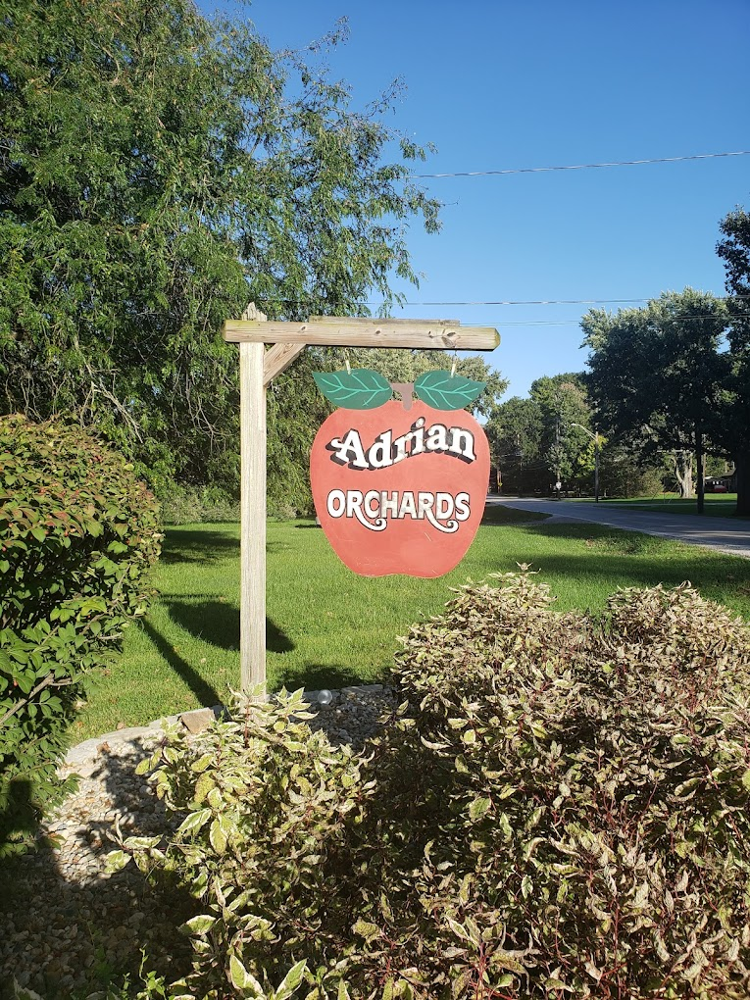

I worked at Adrian Orchards from 2018-2022. At Adrian Orchards,
I was tasked with maintaining the stock of the store, and ensuring
there was enough product for each day. By checking in constantly
and refilling stock, I helped the Orchard stay prepared for all of
the customers coming to buy apples and other products. I continued
to work here for several years seasonally, as during the fall the orchards tended to be busier than the rest of the year, until the eventual selling
of the property.
Skills Learned:
- Attention to Detail
- Organization
- Communication
- Persistence